mais pedido
Corte signature
Degradê desenhado no seu ângulo, laterais na navalha e finalização com balm e blower.
a partir deR$ 70
40 min
Dezessete anos afiando a mesma ideia: navalha quente, linha precisa e um degradê desenhado para o seu tipo de cabelo. Chegou na hora, sai no horário — sem desculpa e sem surpresa na conta.
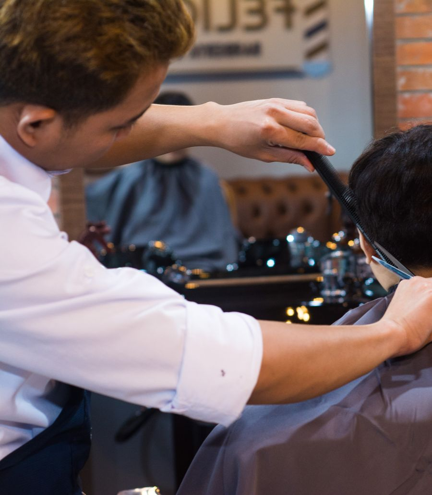
Preço fechado, combinado antes de você sentar. Todos os cortes incluem consulta, lavagem e finalização.
Degradê desenhado no seu ângulo, laterais na navalha e finalização com balm e blower.
Toalha quente, navalha reta, alinhamento a olho e óleo de barba da barbearia no final.
O combo da barbearia: consulta, corte na navalha, barba esculpida e acabamento premium.
Descoloração uniforme, matiz para o tom que você quer e tratamento com máscara proteica.
Design alinhado ao seu rosto, com ativo calmante para não deixar a pele irritada.
Até 10 anos, com cadeira infantil e todo o cuidado para garantir a paciência do pequeno: pipoca e desenho.
Para quem corta a cada 20 dias e não quer pensar em preço: quatro cortes, duas barbas e uma manutenção por mês, com prioridade na agenda.
Voltou em até sete dias com o mesmo barbeiro, refazemos o ajuste — de graça e sem discussão. É a forma mais simples de dizer que o serviço ficou bom.
Do primeiro contato ao balm na finalização, o processo é o mesmo para todos — cliente novo e cliente fiel. Você só precisa aparecer.
WhatsApp ou formulário abaixo. Confirmamos em até 2 horas dentro do horário comercial.
Conversa rápida sobre textura, PMP e histórico: definimos o corte antes de começar.
Navalha, tesoura e máquina calibrada no seu caso. Nada de modelo pronto.
Você sai com o cardápio de retoque e a data certa para manter o shape.
Fotos de trabalhos reais da equipe — clique para ampliar e ver os detalhes do acabamento.
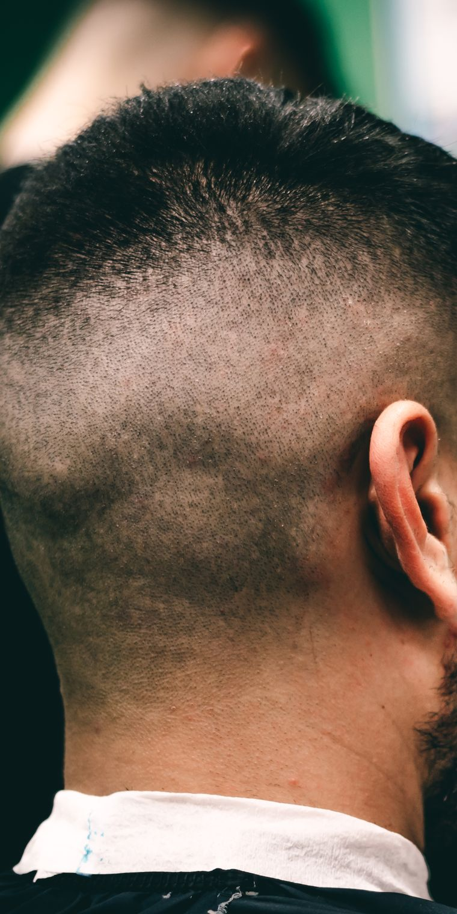
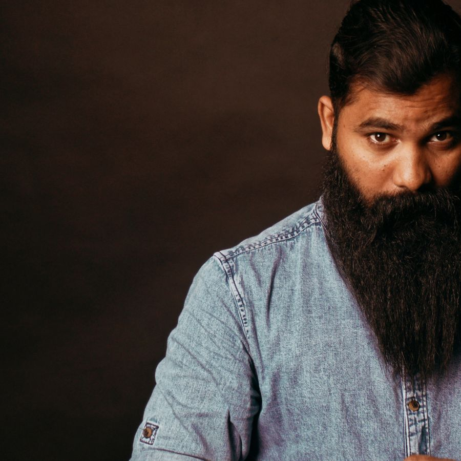
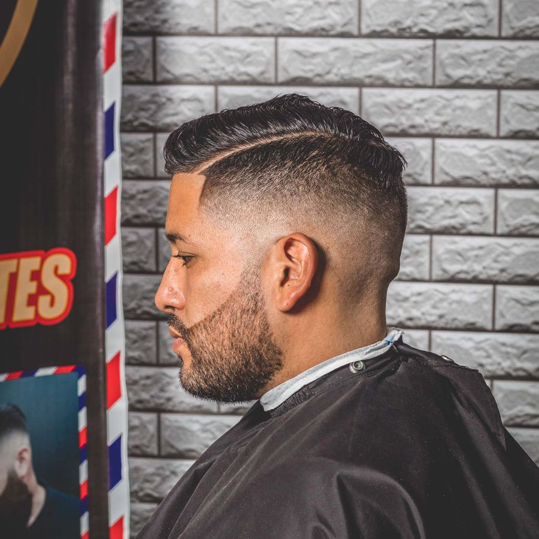
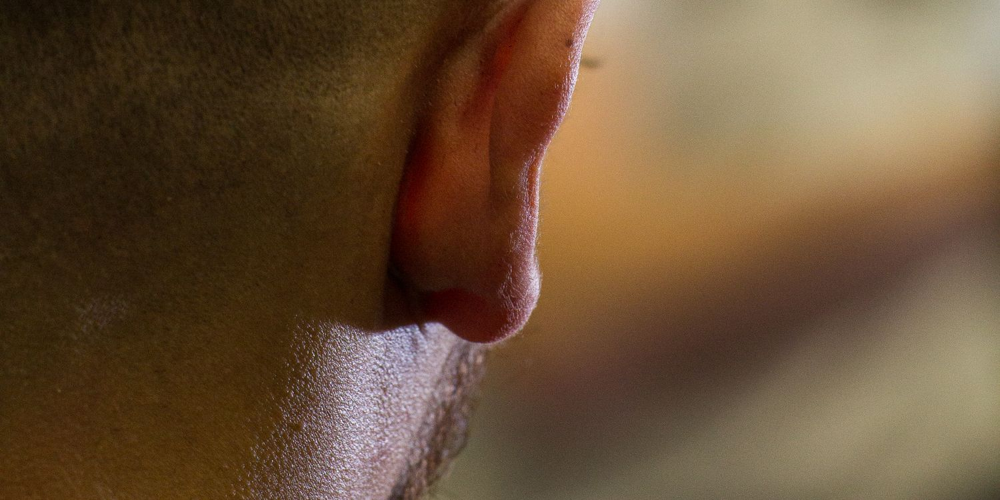
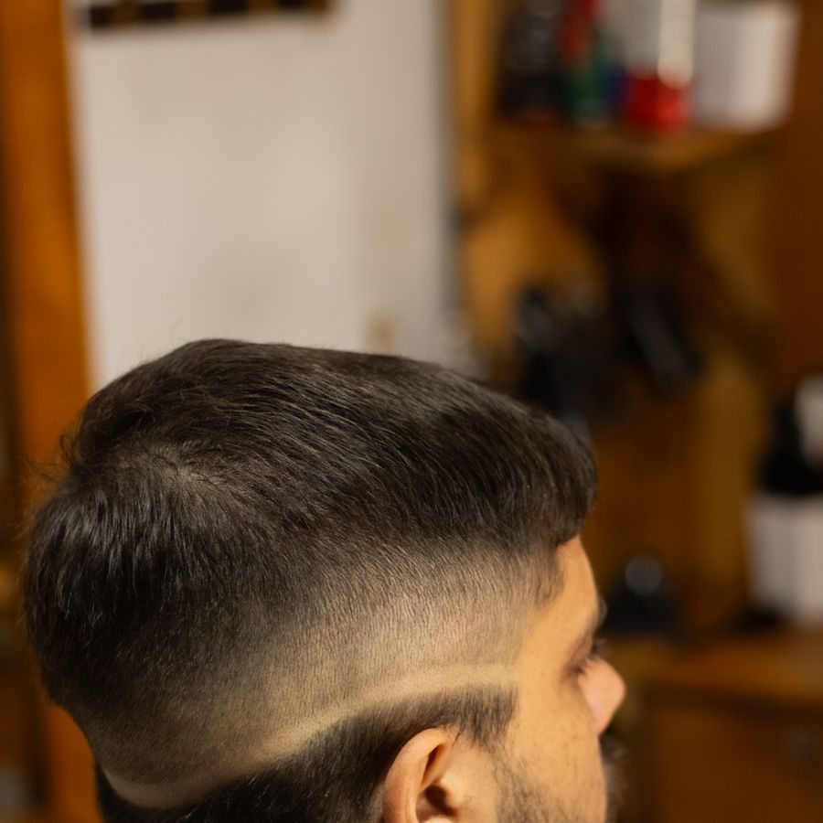
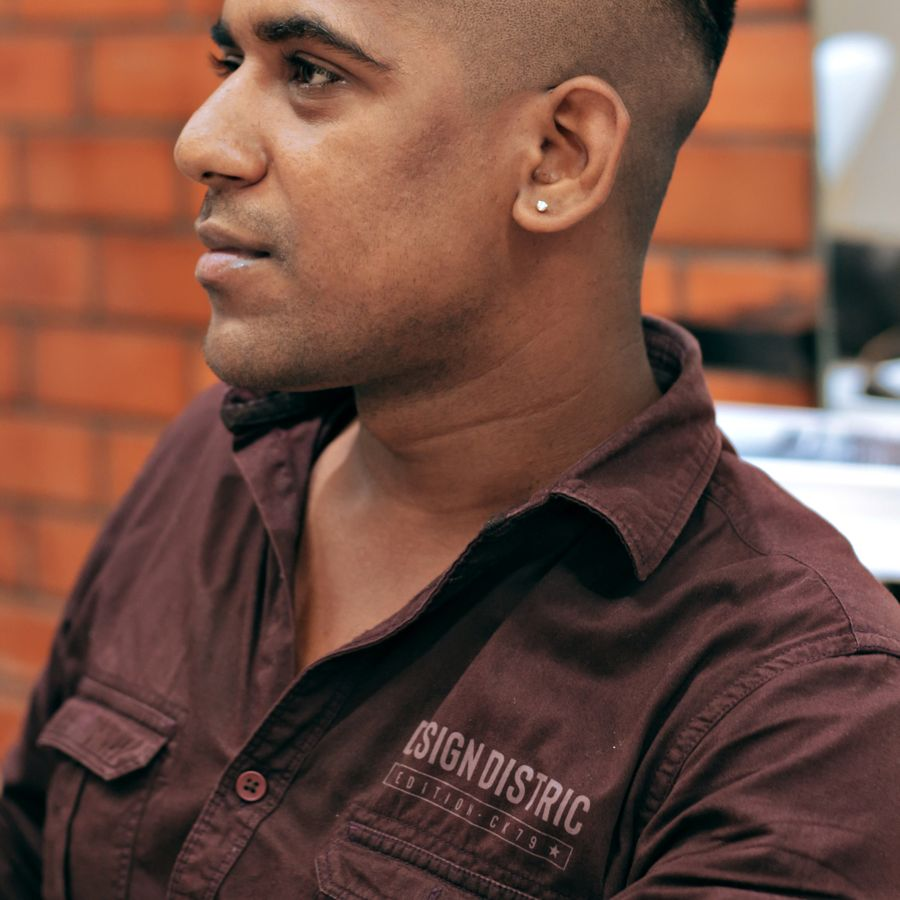
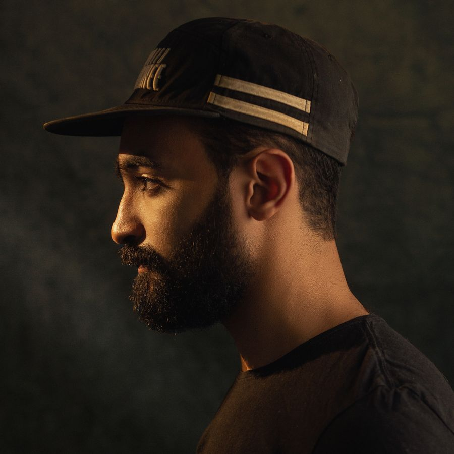
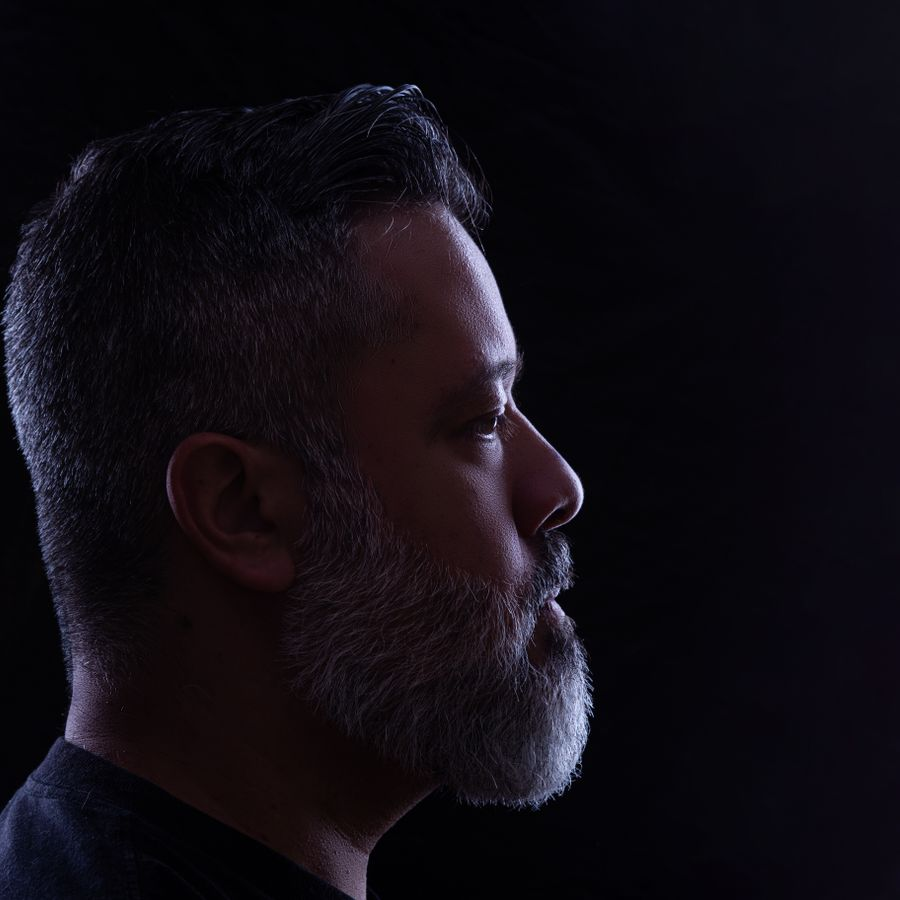
Quatro barbeiros, quatro estilos. Você escolhe quem faz o seu corte — ou deixa a recepção indicar.
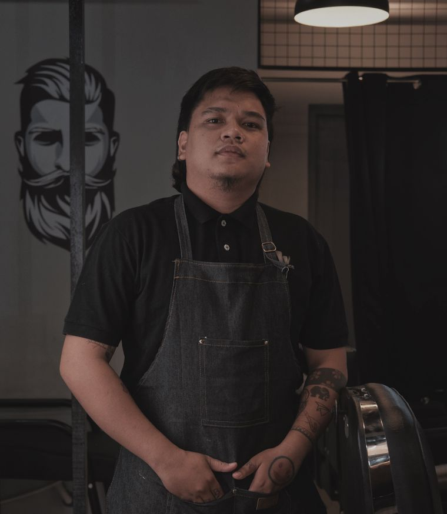
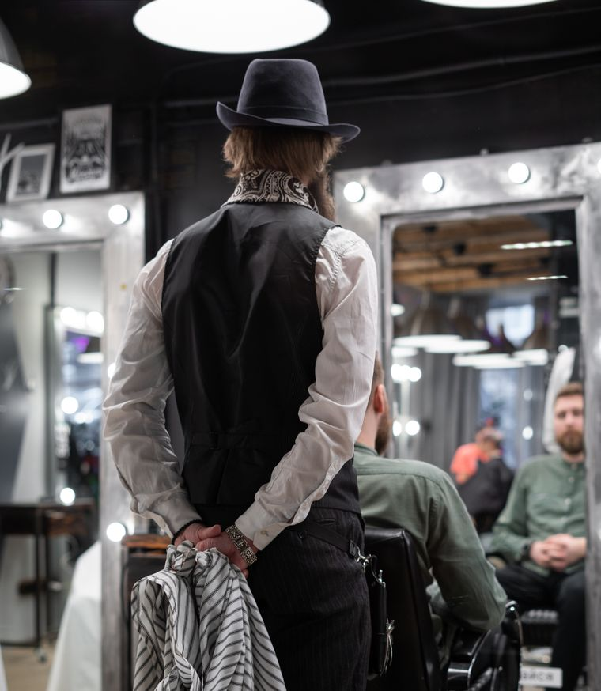
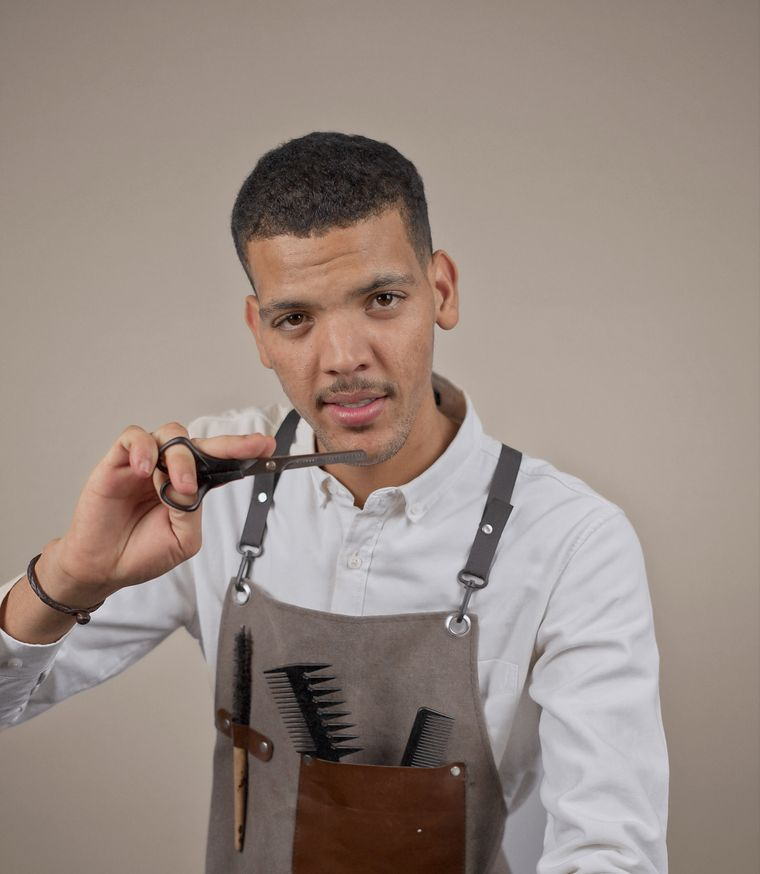
O agendamento sempre oferece os quatro profissionais. Se você já tem um favorito, indica o nome e a gente garante; se preferir, o primeiro disponível atende em média 9 minutos depois do seu horário.
Escolher profissionalVolto aqui desde 2016 e nunca mais deixei a cadeira do Théo. O degrade nasce junto com o cabelo — parece que o rosto ganhou ângulo.
Avaliações coletadas no Google Meu Negócio e no balcão, nos últimos 12 meses.
Cheguei com um degrade torto de outra barbearia e o Théo reconstruiu do zero. Explicou cada passo, deixou eu escolher o formato e o resultado ficou exatamente como ele falou — que isso é raro.
Atendimento pontual das duas da tarde em ponto. A barba sai com acabamento de papel, sem arranhão, e o óleo da barbearia dura o dia todo. Preço justo para esse nível.
Fiz platinado com o Caio e o tom ficou exatamente o que pedi no catálogo. Ele explicou o processo, o custo do retoque e o intervalo ideal. Zero surpresa.
O corte do meu filho de 7 anos foi a primeira vez que ele não chorou na cadeira. Tem brinquedo, tem desenho, tem paciência. Voltamos todo mês.
Nome no copo, música baixa, luz boa. Parece café, parece estúdio, mas o corte é de barbearia de bairro com experiência de spa.
Cacheado é difícil de acertar. O Léo entendeu a textura sem eu explicar nada e definiu o volume certo — só manutenção a cada 25 dias.
Escolha o serviço, o profissional e o melhor horário. Confirmamos pelo WhatsApp em até 2 horas dentro do horário comercial.
Preencha os dados e escolha o melhor horário disponível.
Na primeira visita fazemos a consulta completa, fotografamos o corte para você levar de referência e ajustamos a manutenção sugerida.
| Segunda a sexta | 09h — 20h |
|---|---|
| Sábado | 09h — 18h |
| Domingo | fechado |
Fica a 350 metros do metrô São Joaquim, com 40 minutos de estacionamento pago na rua ao lado.
Entrada sem degrau, sanitário adaptado e cadeira com apoio de braço. Fale com a recepção para reservar um horário com mais tempo de cadeira.